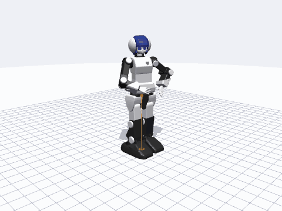
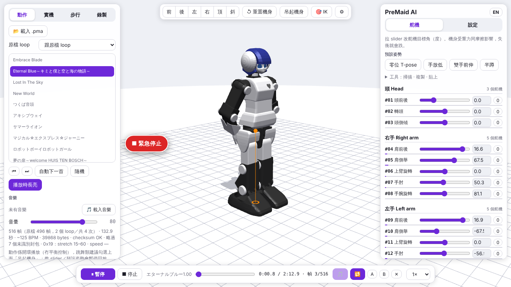
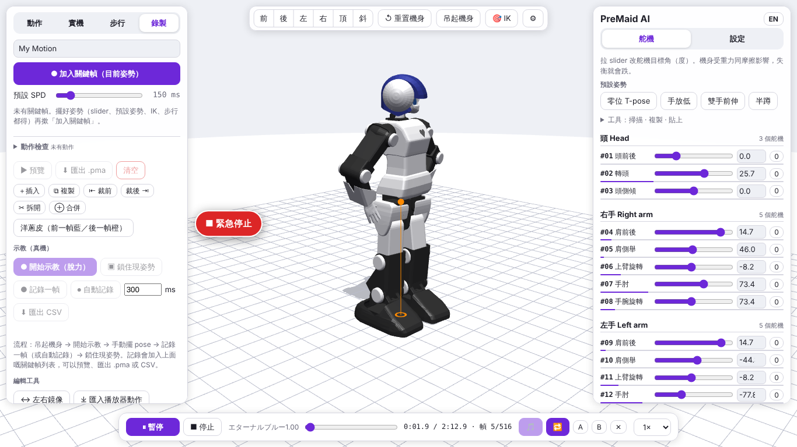
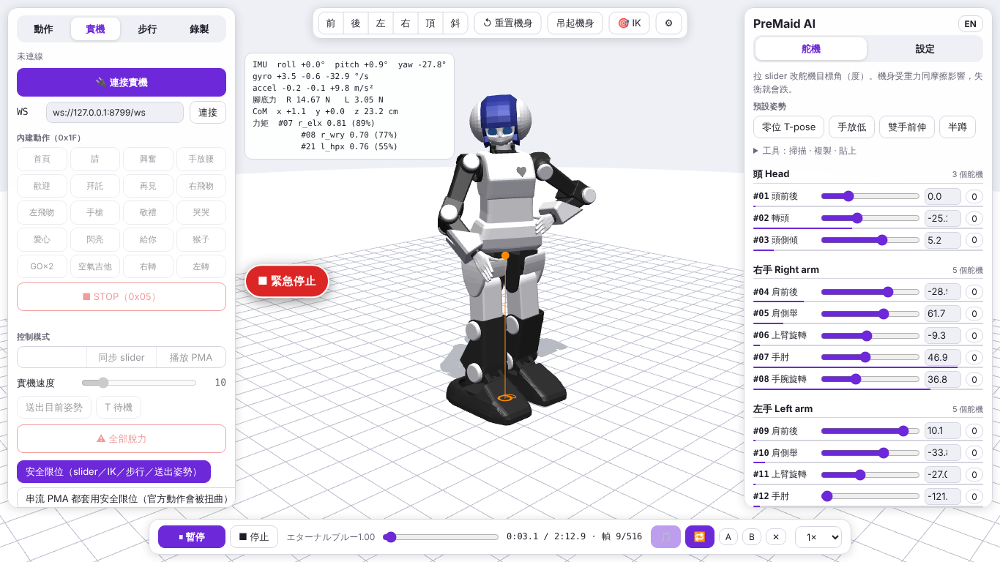

pip install ".[mujoco]" # in a checkout; PyPI release: see pyproject.toml / CI
python -c "import premaidai_description as pm; m, d = pm.load_mujoco('arms_down'); print(m.nu, 'servos')"
python tools/ws_bridge.py /dev/ttyUSB0 --host 0.0.0.0 # drive the robot from Safari / iOS / a Raspberry Pi
colcon build --base-paths ros2 # ROS 2 packages (premaidai_description, premaidai_moveit_config)